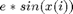
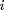
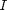
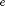
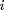
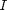
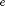

Contents
gTrig.m
Summary: Compute moments of the saturating function  and $ e*cos(x(i))$, where  and  is a (possibly empty) set of  indices. The optional scaling factor  is a vector of length . Optionally, compute derivatives of the moments.
and  is a (possibly empty) set of  indices. The optional scaling factor  is a vector of length . Optionally, compute derivatives of the moments.
[M, V, C, dMdm, dVdm, dCdm, dMdv, dVdv, dCdv] = gTrig(m, v, i, e)
Input arguments:
m mean vector of Gaussian [ d ] v covariance matrix [ d x d ] i vector of indices of elements to augment [ I x 1 ] e (optional) scale vector; default: 1 [ I x 1 ]
Output arguments:
M output means [ 2I ] V output covariance matrix [ 2I x 2I ] C inv(v) times input-output covariance [ d x 2I ] dMdm derivatives of M w.r.t m [ 2I x d ] dVdm derivatives of V w.r.t m [4II x d ] dCdm derivatives of C w.r.t m [2dI x d ] dMdv derivatives of M w.r.t v [ 2I x d^2 ] dVdv derivatives of V w.r.t v [4II x d^2 ] dCdv derivatives of C w.r.t v [2dI x d^2 ]
Copyright (C) 2008-2013 by Marc Deisenroth, Andrew McHutchon, Joe Hall, and Carl Edward Rasmussen.
Last modified: 2013-03-25
function [M, V, C, dMdm, dVdm, dCdm, dMdv, dVdv, dCdv] = gTrig(m, v, i, e)
Code
d = length(m); I = length(i); Ic = 2*(1:I); Is = Ic-1; if nargin == 3, e = ones(I,1); else e = e(:); end; ee = reshape([e e]',2*I,1); mi(1:I,1) = m(i); vi = v(i,i); vii(1:I,1) = diag(vi); % short-hand notation M(Is,1) = e.*exp(-vii/2).*sin(mi); M(Ic,1) = e.*exp(-vii/2).*cos(mi); % mean lq = -bsxfun(@plus,vii,vii')/2; q = exp(lq); U1 = (exp(lq+vi)-q).*sin(bsxfun(@minus,mi,mi')); U2 = (exp(lq-vi)-q).*sin(bsxfun(@plus,mi,mi')); U3 = (exp(lq+vi)-q).*cos(bsxfun(@minus,mi,mi')); U4 = (exp(lq-vi)-q).*cos(bsxfun(@plus,mi,mi')); V(Is,Is) = U3 - U4; V(Ic,Ic) = U3 + U4; V(Is,Ic) = U1 + U2; V(Ic,Is) = V(Is,Ic)'; V = ee*ee'.*V/2; % variance C = zeros(d,2*I); C(i,Is) = diag(M(Ic)); C(i,Ic) = diag(-M(Is)); % inv(v) * cov if nargout > 3 % compute derivatives? dVdm = zeros(2*I,2*I,d); dCdm = zeros(d,2*I,d); dVdv = zeros(2*I,2*I,d,d); dCdv = zeros(d,2*I,d,d); dMdm = C'; for j = 1:I u = zeros(I,1); u(j) = 1/2; dVdm(Is,Is,i(j)) = e*e'.*(-U1.*bsxfun(@minus,u,u')+U2.*bsxfun(@plus,u,u')); dVdm(Ic,Ic,i(j)) = e*e'.*(-U1.*bsxfun(@minus,u,u')-U2.*bsxfun(@plus,u,u')); dVdm(Is,Ic,i(j)) = e*e'.*(U3.*bsxfun(@minus,u,u') +U4.*bsxfun(@plus,u,u')); dVdm(Ic,Is,i(j)) = dVdm(Is,Ic,i(j))'; dVdv(Is(j),Is(j),i(j),i(j)) = exp(-vii(j)) * ... (1+(2*exp(-vii(j))-1)*cos(2*mi(j)))*e(j)*e(j)/2; dVdv(Ic(j),Ic(j),i(j),i(j)) = exp(-vii(j)) * ... (1-(2*exp(-vii(j))-1)*cos(2*mi(j)))*e(j)*e(j)/2; dVdv(Is(j),Ic(j),i(j),i(j)) = exp(-vii(j)) * ... (1-2*exp(-vii(j)))*sin(2*mi(j))*e(j)*e(j)/2; dVdv(Ic(j),Is(j),i(j),i(j)) = dVdv(Is(j),Ic(j),i(j),i(j)); for k = [1:j-1 j+1:I] dVdv(Is(j),Is(k),i(j),i(k)) = (exp(lq(j,k)+vi(j,k)).*cos(mi(j)-mi(k)) ... + exp(lq(j,k)-vi(j,k)).*cos(mi(j)+mi(k)))*e(j)*e(k)/2; dVdv(Is(j),Is(k),i(j),i(j)) = -V(Is(j),Is(k))/2; dVdv(Is(j),Is(k),i(k),i(k)) = -V(Is(j),Is(k))/2; dVdv(Ic(j),Ic(k),i(j),i(k)) = (exp(lq(j,k)+vi(j,k)).*cos(mi(j)-mi(k)) ... - exp(lq(j,k)-vi(j,k)).*cos(mi(j)+mi(k)))*e(j)*e(k)/2; dVdv(Ic(j),Ic(k),i(j),i(j)) = -V(Ic(j),Ic(k))/2; dVdv(Ic(j),Ic(k),i(k),i(k)) = -V(Ic(j),Ic(k))/2; dVdv(Ic(j),Is(k),i(j),i(k)) = -(exp(lq(j,k)+vi(j,k)).*sin(mi(j)-mi(k)) ... + exp(lq(j,k)-vi(j,k)).*sin(mi(j)+mi(k)))*e(j)*e(k)/2; dVdv(Ic(j),Is(k),i(j),i(j)) = -V(Ic(j),Is(k))/2; dVdv(Ic(j),Is(k),i(k),i(k)) = -V(Ic(j),Is(k))/2; dVdv(Is(j),Ic(k),i(j),i(k)) = (exp(lq(j,k)+vi(j,k)).*sin(mi(j)-mi(k)) ... - exp(lq(j,k)-vi(j,k)).*sin(mi(j)+mi(k)))*e(j)*e(k)/2; dVdv(Is(j),Ic(k),i(j),i(j)) = -V(Is(j),Ic(k))/2; dVdv(Is(j),Ic(k),i(k),i(k)) = -V(Is(j),Ic(k))/2; end dCdm(i(j),Is(j),i(j)) = -M(Is(j)); dCdm(i(j),Ic(j),i(j)) = -M(Ic(j)); dCdv(i(j),Is(j),i(j),i(j)) = -C(i(j),Is(j))/2; dCdv(i(j),Ic(j),i(j),i(j)) = -C(i(j),Ic(j))/2; end dMdv = permute(dCdm,[2 1 3])/2; dMdv = reshape(dMdv,[2*I d*d]); dVdv = reshape(dVdv,[4*I*I d*d]); dVdm = reshape(dVdm,[4*I*I d]); dCdv = reshape(dCdv,[d*2*I d*d]); dCdm = reshape(dCdm,[d*2*I d]); end